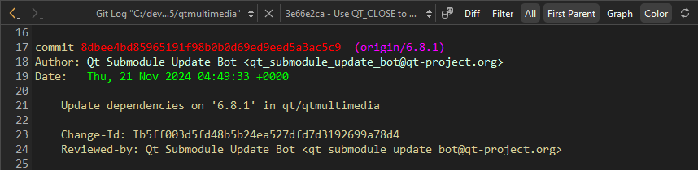
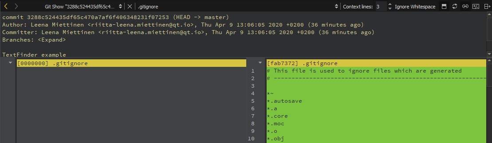

git log
You can view the versioning history of the current file or project directory or local repository.
- To view the versioning history of the current file, go to Tools > Git > Current File and select Log of <file>.
- To view the versioning history of a selection of the current file, go to Tools > Git > Current File and select Log of <file> Selection.
- To view the versioning history of the current project directory, go to Tools > Git > Current Project Directory and select Log of <project directory name>.
- To view the versioning history of the local repository, go to Tools > Git > Local Repository and select Log.
- To view the log of a directory and its subdirectories, right-click it in Projects.
The Git Log view shows the commit identifier, author, date, and commit message.

To set the maximum number of log entries to show, go to Preferences > Version Control > Git > Log count.
Select (Reload) to rescan the files.
View log entry details
In the Git Log view, select a commit identifier to view commit details.
Right-click a commit identifier to apply actions to the commit.
| Menu Item | Description | Learn More |
|---|---|---|
| Add Tag for <hash> | Add a tag reference to the change. You can add an annotation to the tag. | |
| Checkout <hash> | Check out the commit in a headless state. | |
| Cherry-Pick <hash> | Cherry-pick the selected commit to the current branch. | |
| Create branch from <hash> | Create a branch based on the commit. | git branch |
| Copy <hash> | Copy the commit <hash> to the clipboard. | |
| Describe Change <hash> | View a description of the change including the diff in the Git Show view. | |
| Diff Against <hash> | Show the changes between the commit and the current HEAD. | git diff |
| Interactive Rebase from <hash> | Rebase the current branch on top of <hash>, and choose what to do with each commit. | Interactive rebase |
| Log for <hash> | Show the versioning history the commit. | |
| Reset to Change <hash> | Reset the working directory to the commit. | git reset |
| Revert <hash> | Revert the changes introduced by this commit. All other commits remain unchanged. | |
| Save for Diff | Save to the current commit to prepare for Diff Against Saved <hash>. | |
| Diff Against Saved <hash> | Show the changes between the commit and the saved <hash>. | git diff |
Toggle the diff view
To toggle the diff view, select Diff.
Use the patience diff algorithm
To use the patience diff algorithm for calculating the differences, select Patience.
Ignore whitespace changes
To only show text changes, select Ignore Whitespace.
Filter log entries
To filter log entries by the text in the commit message, by strings that were added or removed, or by author:
- In the Git Log view, select Filter.
- Enter a search string in Filter by message, Filter by content, or Filter by author.
- Select Case Sensitive to make filtering consider case.
Show log for all local branches
To show the log for all local branches (for example, to see all commits that touch a file), select All.
Follow only the first parent
To follow only the first parent on merge commits, select First Parent.
Toggle text and graph
To toggle between textual and visual representation of the log, select Graph.
Toggle colors
To toggle color coding of different parts of the log entries, select Color.
Show log for previous names of the file
To show log also for previous names of the file, select Follow.
Show details
To display a description of the change including the diff in the Git Show view, select Describe Change <hash> in the context menu.

See also How To: Use Git and Git.